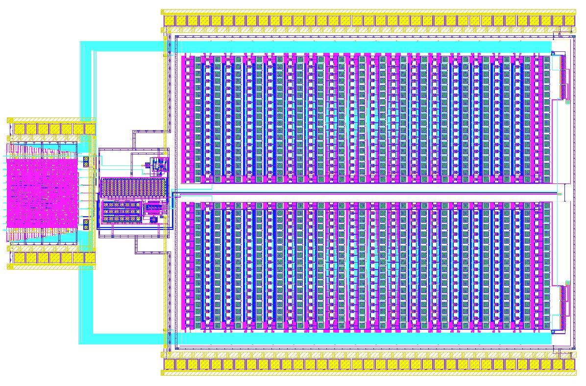

Mixed-signal IC design · 2024
100 KSPS 8-bit SAR ADC
A fully differential successive-approximation ADC designed for low-power wearable and implantable applications.
LOHAN ATAPATTU / PROJECT 04SAR2024 · MIXED-SIGNAL IC DESIGN
RESEARCH SUMMARY
Design overview
The converter targets 8-bit resolution at 100 KSPS. The design work focused on circuit design, simulation, and balancing power, area, and resolution. It was developed as part of UNIC-CASS and submitted for tapeout.
DESIGN MATERIALS
Circuit schematic & layout
The schematic panel is ready for the circuit drawing. The physical layout is shown alongside it.
CIRCUIT SCHEMATICSchematic image to be added
Schematic drawing will be added here.
